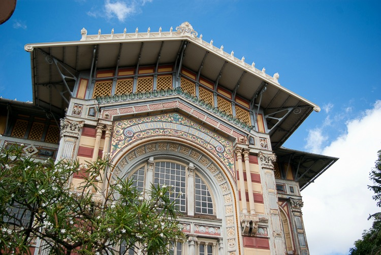
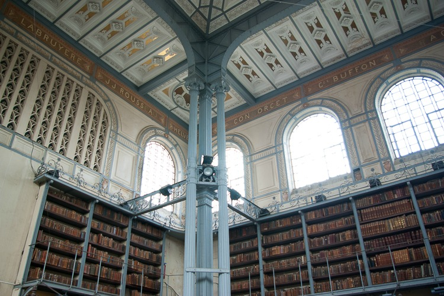
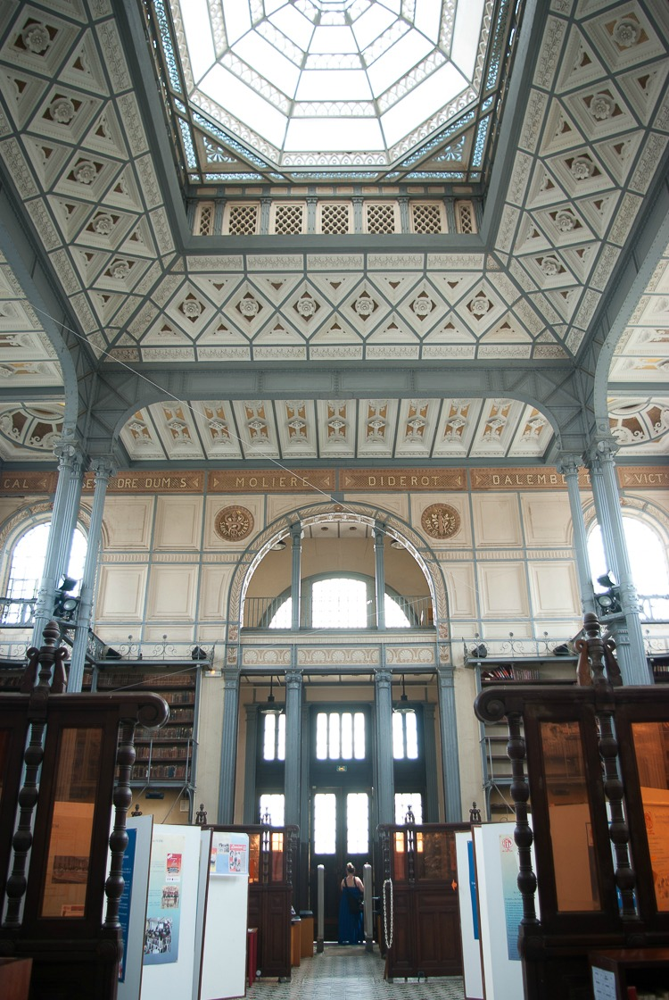

La Bibliothèque Schœlcher est la bibliothèque publique départementale de la ville de Fort-de-France1 en Martinique, nommée d'après l'homme politique français Victor Schœlcher (1804-1893). Elle se situe à l'angle de la rue de la Liberté et de la rue Victor Sévère, face à l'angle nord de la place de la Savane.
Célibataire et sans enfant, Victor Schœlcher, représentant du mouvement abolitionniste et député de la Martinique et de la Guadeloupe de 1848 à 1850, décide de léguer sa vaste collection de 10 000 livres et 250 partitions musicales au Conseil général de la Martinique à condition que cette bibliothèque soit ouverte à tous, en particulier pour l’instruction des anciens esclaves noirs, et placée sous la responsabilité d’un bibliothécaire attitré, dont le premier est Victor Cochinat, journaliste parisien et secrétaire d’Alexandre Dumas, que Victor Schœlcher impose.
Le Conseil général confie à l'architecte Pierre-Henri Picq le soin de concevoir le bâtiment destiné à accueillir cette collection.

La plupart des livres originaux en provenance de la bibliothèque personnelle de Schœlcher (10 000 volumes et 250 partitions musicales) sont envoyés de métropole en Martinique dès 1884. Environ 1 200 livres du don de Schœlcher échappent aux flammes lors du grand incendie de Fort-de-France en 1890, parmi lesquels un exemplaire de Quatrevingt-treize dédicacé par Victor Hugo. Parmi les trésors de la Bibliothèque, on compte aussi un Code noir et un traité de navigation en latin du XVIIe siècle.
La bibliothèque possède un fonds de 130 000 ouvrages,dont un important fonds antillais.
